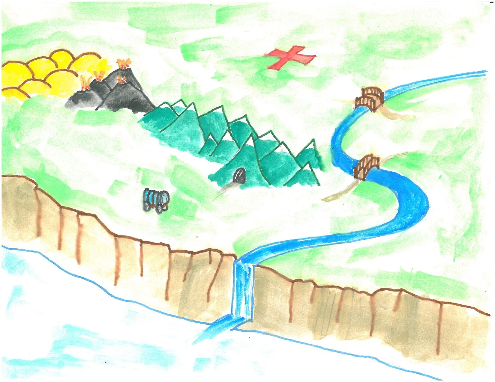
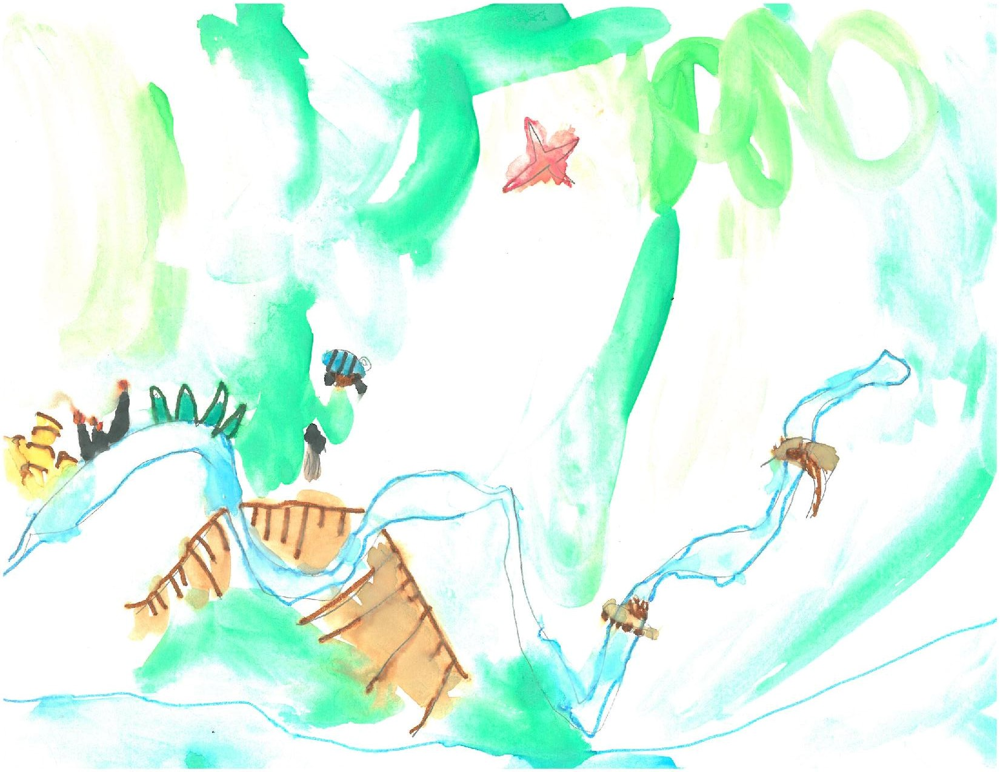

The general conception of a prototype is an incomplete version of something, built hastily out of cheap materials, like building a foam-core model of a robot before building the real thing. You build a prototype, and then when you're done, you build the real thing.
Lurking in this conception is a trap that you should avoid, a trap that is particularly alluring to smart, busy college students. The trap is that it seems like you could just skip the prototype and get on to the final version sooner, thereby saving time.
But that's not right. Here, look at this picture I painted for you.
This is what prototyping is like. You're trying to get the wagon to the promised land where the treasure is buried under a big red X. You might be able to drag the wagon across the two bridges. You might be able to go through that tunnel in the mountains. Maybe you can squeeze between the sand dunes and the volcanoes.
The one thing you should obviously not do is to pick a direction with no idea where it leads and then roll as fast as possible in that direction. That's what you're doing when you try to build the final version first.
Instead, you want to identify risks and then do tests to mitigate them. For example, maybe the wagon won't fit over the bridge. You could measure the wagon, and then measure both bridges. Maybe there's swampy area where the wheels will bog down. You could try dragging a wheel through the mud and see how much it sank under different weights. Maybe the tunnel is filled with lava. You could try a throwing piece of the material your wagon is made of into the tunnel, and see if it is burned into ashes.
Prototyping is about identifying risks in a design and then building something to test and mitigate those risks. You build prototypes to help you improve the design; a series of quick, smart prototypes gets you to a good design faster than skipping to a "final" design that has never been tested in the real world.
"Everyone has a plan 'til they get punched in the mouth." --Michael G. Tyson
There are lots of different kinds of prototypes that you can build. In the mechanical realm, it could be cardboard, foamcore, wood, or the like, fashioned into roughly the right size and shape. In the electrical realm, it could be a microcontroller like an Arduino or Raspberry Pi connected to a breadboard with jumper wires, all stuffed in a box. In software, it could be a fake user interface, made in Photoshop or Balsamiq Mockups, or a test harness written just to test an algorithm. In each realm, there are also deeper levels of prototyping.
Here are some more examples.
Also, here's a watercolor my daughter made for you.
